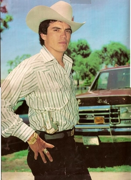
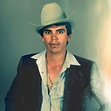
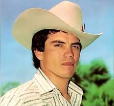

 
"IFORMACION"
"1960-1977": primeros años Rosalino Sánchez Félix nació el 20 de agosto de 1960 en Rancho el Guayabo, Sinaloa, siendo hijo de Santos Sánchez y Senorina Félix, y teniendo nueve hermanos: Armando, Lázaro, Régulo, Lucas, Espiridión, Francisco, Juana, Alí Cordero y Sergio González.34 Tras su nacimiento, fue llevado a vivir al Rancho Las Flechas, donde transcurrió su infancia y adolescencia.5 Tanto él como su familia pasaron por situaciones complicadas debido a la pobreza en que vivían, misma que empeoró luego de la muerte de su padre, ocurrida cuando el contaba apenas con seis años de edad."DESCRIPCION"
Rosalino Sánchez Félix (Rancho el Guayabo, Sinaloa, 30 de agosto de 1960-Culiacán, Sinaloa, 16 de mayo de 1992), conocido como Chalino Sánchez, fue un cantante y compositor mexicano. Se especializó en los géneros de corrido, ranchera y regional mexicano. 1977-1984: inmigración ilegal a Estados Unidos Al cumplir diecisiete en 1977, inmigró ilegalmente a Estados Unidos. Una vez allá, comenzó a trabajar en los campos de Coachella y en varios trabajos que le encomendaban. Apartado de sus actividades laborales, su hermana Juana le presentó a Marisela Vallejo Bolaños."IMAGENES"
"CANCIONES"
1. "Nieves de Enero" 2. "La Cumbia de la Culebra" 3. "El Crimen de Chalino" 4. "Alma Enamorada" 5. "La Puerta de Alcalá" 6. "El Rey de la Calle" 7. "Corrido de Juanito" 8. "Corrido de la Muerte" 9. "El Sapo" 10. "Corrido de la Culebra""PIE DE PAGINA"
"Pagina web de JOSE LUIS GOMEZ MORENO "CHALINO SANCHEZ"
https://es.wikipedia.org/wiki/Chalino_S%C3%A1nchez